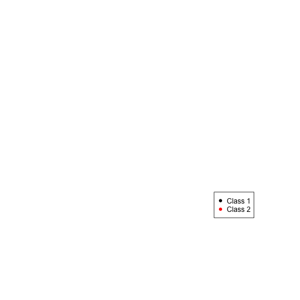

clustTMB fits finite mixture models that incorporate both covariate and random effect structure within either the gating, the expert, or both components of the model. The clustTMB model is built in Template Model Builder (TMB) and implemented in R using formula syntax similar to other finite mixture modeling packages such as mclust. The TMB structure of the finite mixture model allows for fast computations of random effects by using the Laplace Approximation to calculate the marginal likelihood of fixed effects after integrating out random components. Spatial random effects are estimated through approximations of the Gaussian Markov Random Fields via the FEM-SPDE method introduced by INLA.
Installation
You can install the development version from GitHub with:
remotes::install_github("Andrea-Havron/clustTMB", build_vignettes = TRUE)The clustTMB package relies on functions from R-INLA, which is not available on CRAN. Details on installing R-INLA are available on this website. To install the stable version, use:
install.packages("INLA",repos=c(getOption("repos"),INLA="https://inla.r-inla-download.org/R/stable"), dep=TRUE)Example
A basic example is illustrated with the faithful dataset:
library(clustTMB)
#> Warning in checkDepPackageVersion(dep_pkg = "TMB"): Package version inconsistency detected.
#> glmmTMB was built with TMB version 1.9.1
#> Current TMB version is 1.9.0
#> Please re-install glmmTMB from source or restore original 'TMB' package (see '?reinstalling' for more information)
data("faithful")
m1 <- clustTMB(response = faithful, covariance.structure = "VVV")
For more detailed examples, see vignettes:
## Not Run
# install.packages("utils")
utils::browseVignettes("clustTMB")
## End Not Run